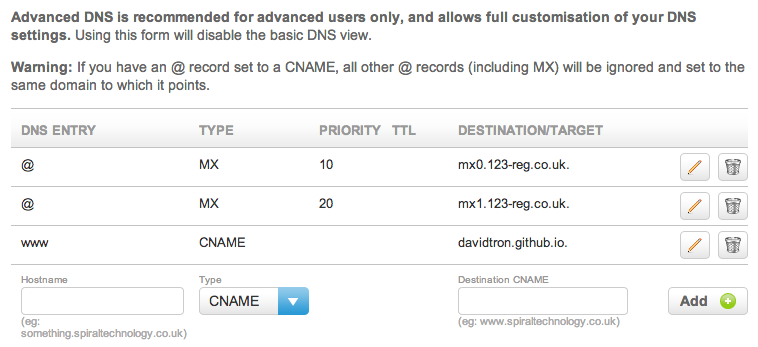

Pointing 123-reg hosted domain to GitHub pages
After building this blog statically and pushing it up to GitHub as a project page, I then wanted to point my domain at it.
My intention is to point the www subdomain of spiraltechnology.co.uk at my static website hosted by GitHub at http://davidtron.github.io
In the root of my website create a file called CNAME and put the name of my subdomain in it www.spiraltechnology.co.uk. Since my site is generated by wintersmith, I needed to drop the file into the contents directory before generating the site. This is then generated by wintersmith into my deployment directory and pushed to my GitHub userpage repository
cd ~/dev/spiraltechnology-website wintersmith build cd ~/dev/spiraltechnology-website-deploy git add CNAME git commit -a -m "Adding the CNAME for custom domain" git push origin masterThe next step is to configure my DNS so that any requests for www.spiraltechnology.co.uk point to my GitHub user page. The help pages at GitHub suggest that this is done using a CNAME entry at your domain provider. My domain is hosted with 123-reg and it’s relatively straightforward to update DNS entries for domains you own. Log on to 123 and you will be presented with your control panel

Find the domain you want to manage from the drop down and select ‘Manage’

Under the Advance domain settings, select ‘Manage DNS’

Finally add an entry for www as a CNAME pointing to the GitHub userpage (davidtron.github.io)